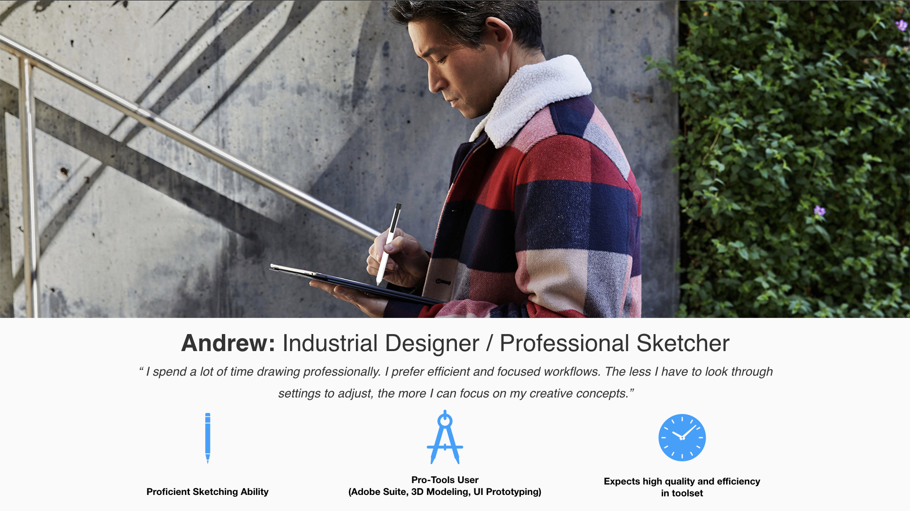
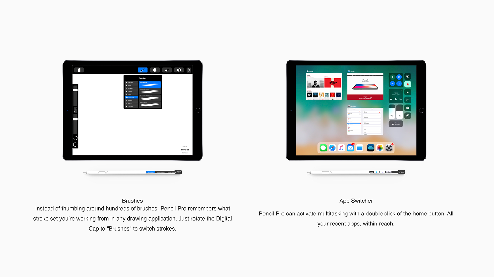
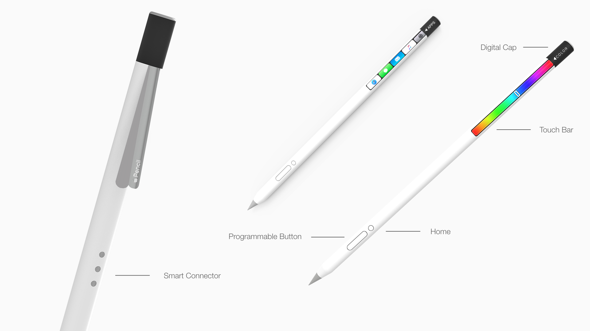
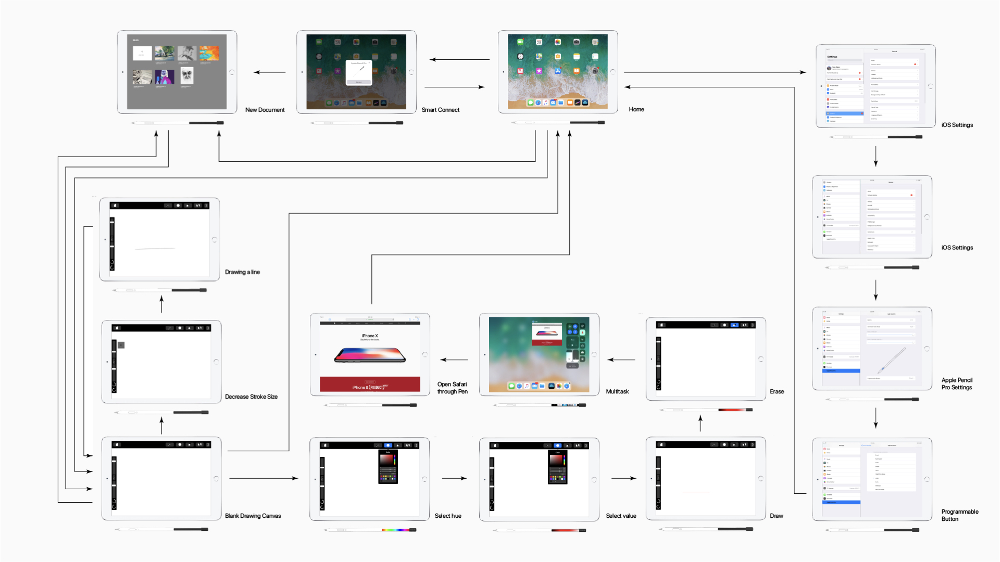

Working with a group, we started by examining current problems with the user experience of digital sketching. We identified problems with users switching between tools and interrupting their workflow.
We created a physical product and interface to address these needs featuring two key features: a tactile rotating cap selector and a touch bar interface. It was key that these features did not distract or take away from the existing sketching interface but to facilitate a quicker workflow.


We implemented additional features like Smart Connect and programmable buttons, each with matching digital interfaces.
We then created a compatible prototype version of Procreate to reflect the advanced functionalities.
